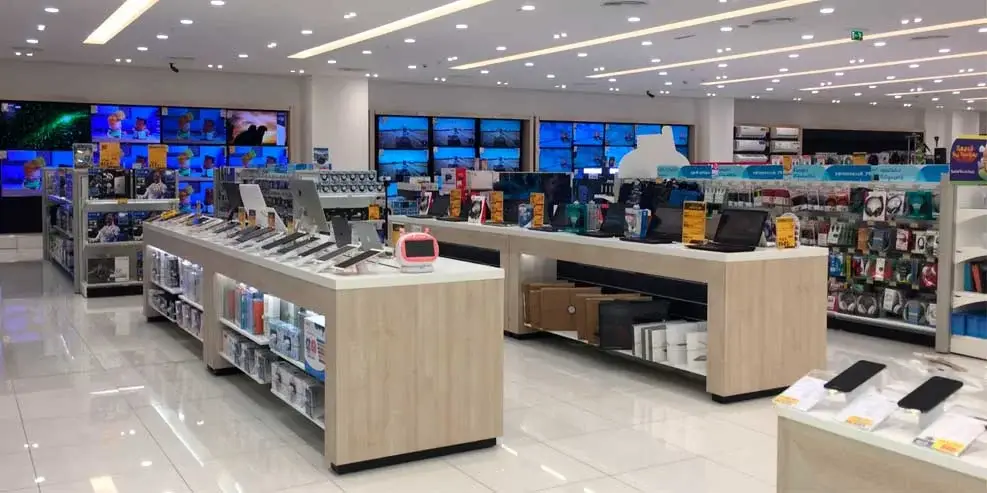
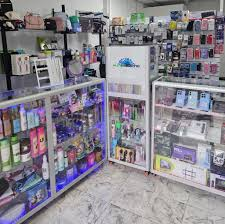
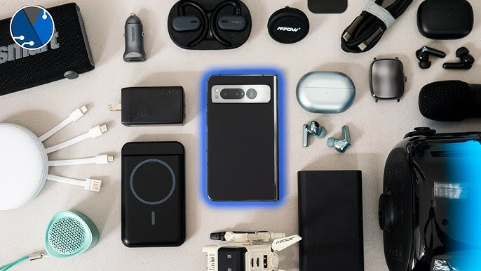

¿Quienes somos TechMobile?

Fundación y primeros pasos
TechMobile nació en el año 2010, en una pequeña ciudad donde la tecnología comenzaba a formar parte esencial de la vida cotidiana. Su fundador, Kevin Alejandro Jaramillo Díaz, un joven emprendedor apasionado por los avances tecnológicos, soñaba con crear una empresa dedicada a ofrecer celulares y accesorios de calidad a precios accesibles. La idea surgió cuando notó que muchas personas no tenían acceso a buenos dispositivos por los altos costos del mercado. Con visión, esfuerzo y mucha determinación, Kevin abrió su primera tienda física con un pequeño inventario y una gran meta: acercar la tecnología a todos los hogares.

Primeros logros y crecimiento
Durante los primeros años, TechMobile se destacó por su atención personalizada y su compromiso con los clientes. Kevin no solo vendía teléfonos, también ofrecía asesorías sobre cómo aprovechar al máximo cada dispositivo. Esta cercanía generó confianza y permitió que la empresa creciera rápidamente. En 2012, TechMobile comenzó a distribuir celulares nuevos y originales de marcas reconocidas, consolidándose como una tienda confiable y moderna. El boca a boca hizo su trabajo: los clientes satisfechos recomendaban la tienda, y cada día más personas se unían a la comunidad de TechMobile.
Diversificacion de productos
En 2016, TechMobile amplió su catálogo para incluir una gran variedad de accesorios para celulares, tales como fundas, protectores de pantalla, audífonos, cargadores rápidos, cables, bocinas y relojes inteligentes. El objetivo era ofrecer una experiencia completa: que cada cliente pudiera encontrar en un solo lugar todo lo necesario para cuidar, mejorar y personalizar su dispositivo móvil. Este cambio impulsó aún más las ventas y posicionó a TechMobile como una de las tiendas más completas y confiables del sector tecnológico.

Compromiso con la calidad y la innovación
A partir de 2018, TechMobile fortaleció sus alianzas con marcas internacionales para garantizar productos 100% originales y con garantía directa del fabricante. Además, implementó un sistema de atención al cliente en línea, donde los usuarios podían resolver dudas, recibir asesoría y seguimiento a sus pedidos en tiempo real. La empresa se enfocó en ofrecer una experiencia de compra moderna, rápida y segura, incorporando métodos de pago digitales y envíos a todo el país. Gracias a esta visión innovadora, TechMobile se consolidó como una empresa líder en la venta de celulares y accesorios tecnológicos.
Presente y visiones hacia el futuro
Hoy en día, TechMobile cuenta con más de 20 sucursales distribuidas estratégicamente en distintas ciudades, además de una tienda en línea que recibe miles de visitas mensuales. Bajo la dirección de Kevin Alejandro Jaramillo Díaz, la empresa continúa creciendo con una misión clara: hacer que la tecnología sea accesible, confiable y útil para todos.
TechMobile sigue apostando por la innovación, explorando nuevas tendencias como los dispositivos inteligentes, los accesorios ecológicos y la conectividad avanzada. Su visión es mantenerse a la vanguardia del mercado, adaptándose a las necesidades de cada generación y ofreciendo soluciones que faciliten la vida de las personas.
Conclusiones
La historia de TechMobile es un ejemplo de cómo la pasión, la visión y el compromiso pueden transformar un pequeño sueño en una gran empresa. Desde sus humildes comienzos hasta su consolidación como marca reconocida, TechMobile ha demostrado que el éxito se construye con esfuerzo, innovación y confianza. Hoy, bajo el liderazgo de Kevin Alejandro Jaramillo Díaz, la empresa continúa creciendo, conectando a miles de personas con el futuro a través de la tecnología.